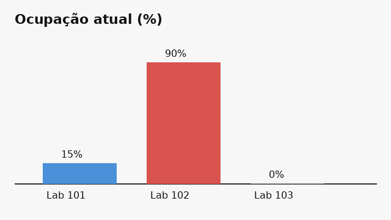

Resumo do dia
Os três laboratórios de informática do CEUNSP atendem os cursos de tecnologia no período noturno e aos sábados. Hoje, o Laboratório 101 está livre, o 102 está ocupado e o 103 segue em manutenção.
Use este painel para conferir a situação de cada sala, consultar a grade de horários e os equipamentos disponíveis, ler as regras de uso e, por fim, consultar uma reserva pelo formulário no final da página.
- 3 laboratórios
- 95 lugares no total
- 35% de ocupação média

Situação dos Laboratórios
A tabela abaixo mostra a localização, a capacidade e a situação de cada laboratório. A coluna Ocupação corresponde ao gráfico da Figura 1.
| Laboratório | Localização | Capacidade | Ocupação | Situação |
|---|---|---|---|---|
| Laboratório 101 | Bloco A, 1º andar | 30 alunos | 15% | Livre |
| Laboratório 102 | Bloco A, 2º andar | 25 alunos | 90% | Ocupado |
| Laboratório 103 | Bloco B, térreo | 40 alunos | 0% | Em manutenção |
| Total geral | 95 alunos | 35% (média) | 1 livre, 1 ocupado, 1 em manutenção | |
Legenda dos status
- Livre: sala disponível para uso e para novas reservas.
- Ocupado: aula em andamento ou reserva já confirmada para este horário.
- Em manutenção: sala fechada para reparos; não aceita reservas.
Grade de Horários
A grade abaixo mostra as aulas fixas do Laboratório 101 no turno da noite. Os horários marcados como Livre podem receber reservas de outros cursos e de projetos de extensão.
| Horário | Segunda | Terça | Quarta | Quinta | Sexta |
|---|---|---|---|---|---|
| 19h00 – 20h40 | Lógica de Programação | Banco de Dados | Projeto Integrador | Front-End I | Livre |
| 20h50 – 22h30 | Algoritmos | Redes de Computadores | Front-End I | ||
| Sábado | Das 8h às 12h: livre para oficinas, provas e reservas especiais | ||||
Equipamentos e Softwares
Cada laboratório tem uma configuração própria. Antes de reservar, confira se os programas que você vai usar estão instalados na sala escolhida. Para pedir a instalação de um novo programa, procure a equipe de TI com pelo menos 5 dias úteis de antecedência.
| Item | Laboratório 101 | Laboratório 102 | Laboratório 103 |
|---|---|---|---|
| Computadores | 30 | 25 | 40 (12 em reparo) |
| Processador | Intel Core i5 | Intel Core i5 | Intel Core i7 |
| Memória RAM | 8 GB | 8 GB | 16 GB |
| Sistema operacional | Windows 11 | Windows 11 | Windows 11 e Ubuntu |
| Projetor multimídia | Sim | Sim | Em manutenção |
| Softwares instalados |
|
|
|
Regras de Uso
O uso dos laboratórios é gratuito para alunos e professores, mas depende do cumprimento das regras abaixo. Elas existem para que todos encontrem a sala e os equipamentos em boas condições.
Antes de usar o laboratório
- Solicite a reserva com 48 horas de antecedência, pelo formulário desta página.
- Aguarde a confirmação enviada para o seu e-mail institucional.
- Chegue com 10 minutos de antecedência e apresente a carteirinha ao técnico responsável.
- Confira se o computador liga e se os programas necessários estão instalados.
Durante o uso
- Não é permitido comer ou beber dentro do laboratório.
- Não instale nem remova programas sem autorização da equipe de TI.
- Avise o técnico imediatamente se algum equipamento apresentar defeito.
- Ao terminar, salve seus arquivos em um pendrive ou na nuvem e encerre a sessão.
Perguntas frequentes
Posso reservar o laboratório para estudar sozinho?
Sim, desde que o laboratório esteja livre no horário escolhido e que a reserva siga a regra das 48 horas de antecedência.
E se eu precisar cancelar uma reserva?
Avise a coordenação com pelo menos 24 horas de antecedência, para que o horário volte a ficar disponível para os outros alunos.
Quantos alunos cabem em cada laboratório?
Depende da sala: 101 comporta 30 alunos, 102 comporta 25 e 103 comporta 40. Consulte a tabela de situação dos laboratórios.
Consultar reserva
Preencha os dados abaixo e clique em Buscar. Todos os campos marcados com * são obrigatórios.